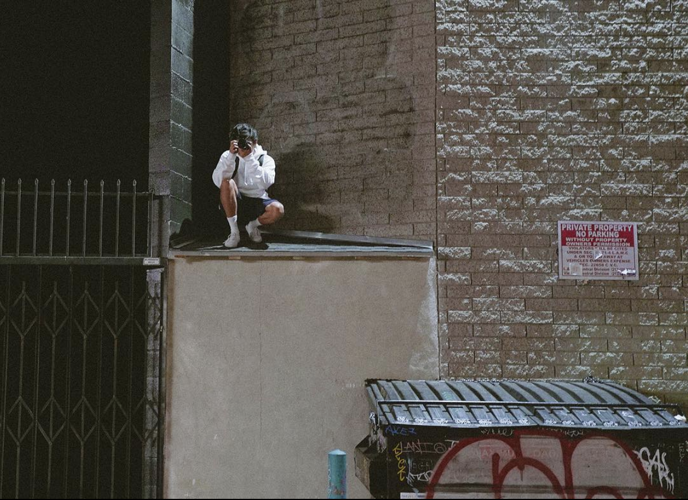

This is a fan page for
Cade Laranang
CADE LARANANG
WOO what a guy!
Cade is a talented MA+P Major in the School of Cinematic Arts at USC!

Not only is Cade a student in MAP, but he is also a Freelance Videographer and does work in design, marketing, and photography.

One of his most recent works, a music video, can be seen here.

He even creates video content for the school's football and basketball teams, which can be found on his impressive online portfolio. 


His animation work has a really great style, these are some of my favorite pieces.
To see more, he also has a video series on his YouTube channel.
Lastly, you can even connect with him on his LinkedIn with any business inquiries.